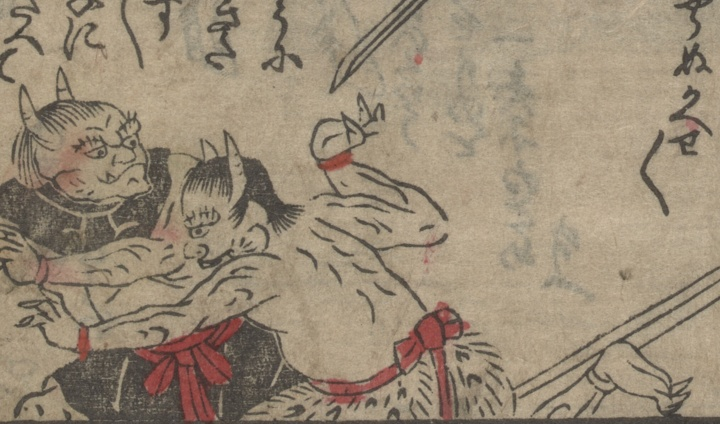

頼光たちに追われて、逃げる鬼。頭に2本の角が生え、上半身は裸で、毛皮の腰巻を褌で締めている。
著作者：不明／出典：親書誌：U426_nichibunken_0473：[絵本千丈嶽]；エホンセンジョウガタケ／日付：2025／資源識別子：U426_nichibunken_0473_0006_0002
Copyright (c)2010- International Research Center for Japanese Studies, Kyoto, Japan. All rights reserved.